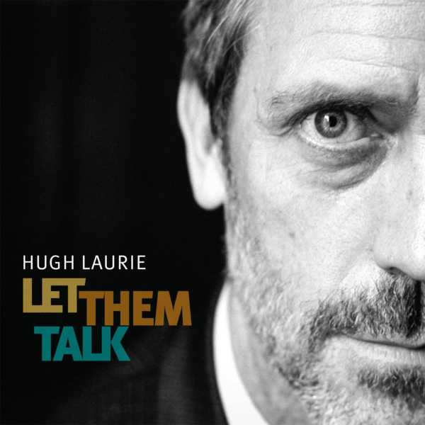
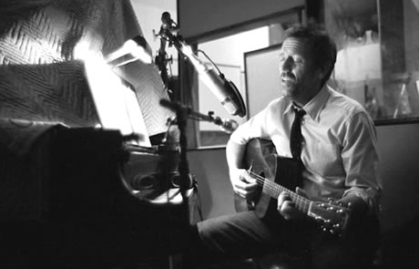

Our History
biography of your business
Let Them Talk By Hugh Laurie
Is the debut album by English actor and musician Hugh Laurie. The album, which consists of classic blues songs, was released on 9 May 2011. Some of the songs are collaborations with well-known artists such as Tom Jones, Irma Thomas and Dr. John. Laurie plays piano and guitar on the album in addition to providing lead vocals. Kevin Breit plays guitar and Vincent Henry plays saxophones.The album was produced by Joe Henry and features horn arrangements by Allen Toussaint.
Laurie premiered some of the songs in a small New Orleans club in March 2011. In the UK, he performed at the Union Chapel in London, at the Cheltenham Jazz Festival, Warwick Arts Centre in Coventry, and at Manchester's Royal Northern College of Music. Laurie also made several television appearances, including BBC2 programmes The Graham Norton Show and Later... with Jools Holland, and was interviewed on BBC Radio 2's Chris Evans Breakfast Show.
On 15 May 2011, Laurie appeared in the UK ITV series Perspectives, explaining his love for the music of New Orleans and playing music from the album, at studios and live venues in the city itself.
A special edition of the album, containing three more songs, was released on 15 May 2011. A second blues album, named Didn't It Rain, was released on 6 May 2013.

Also includes documentary segments showing Laurie’s daytime and nocturnal travels around the city on foot, by bike, or car, including a visit to the legendary Euclid Records shop, where he reverently inspects the classic LPs there.
Laurie dubs the city “the most romantic place on earth” and observes that this is “a city that doesn’t fear death. It’s looked death in the eye.” This aspect is reflected in its music, he notes. “Death is the minor key. Life is the major key.”
He freely admits he’s following “in the footsteps of Martin Scorsese, Ken Burns, and Spike Lee,” all of whom memorably trod similar cinematic musical paths.
Of Laurie’s piano prowess, Jones observes admiringly, “He must have listened to a lot of blues players, a lot of boogie-woogie players,” and notes that Laurie’s playing resembles that of Jerry Lee Lewis. Thomas marvels that when she saw him on the keyboards on House, she “could tell he was actually playing.”
With concert sequences filmed at the historic Latrobe’s building in the French Quarter, the musical selections include New Orleans blues standards along with forgotten and neglected gems.
